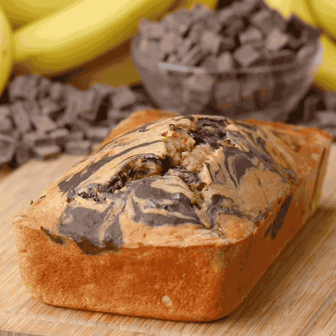
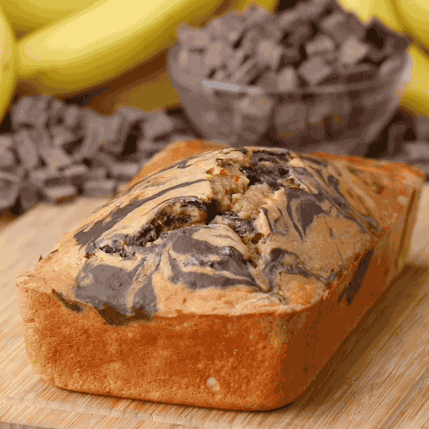

The
Banana
Bananas are a type of fruit that are typically yellow or green in colour
and
have a soft, sweet flesh. They are a popular fruit that can be eaten
raw or
cooked in a variety of dishes, such as banana bread, smoothies, and
desserts. Bananas are high in fiber, vitamin C, and potassium, and are also
a good source of other essential nutrients. They are commonly grown in
tropical
regions around the world, and there are many different varieties of
bananas
with varying sizes, colors, and flavors. Some popular types
of bananas include
Cavendish, plantain, and red bananas.
Banana Bread
Recipe
(click image)
 
